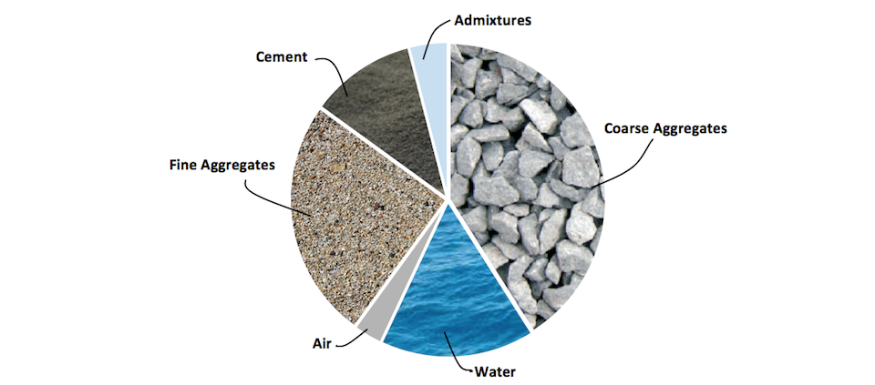
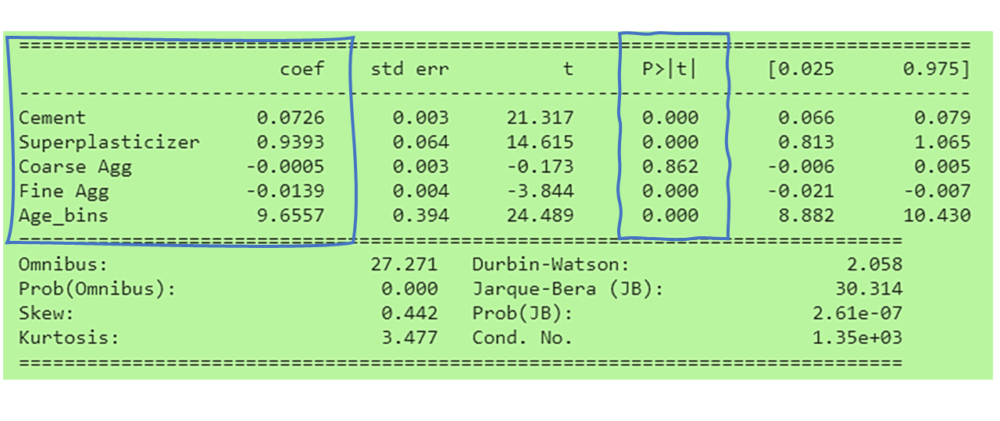
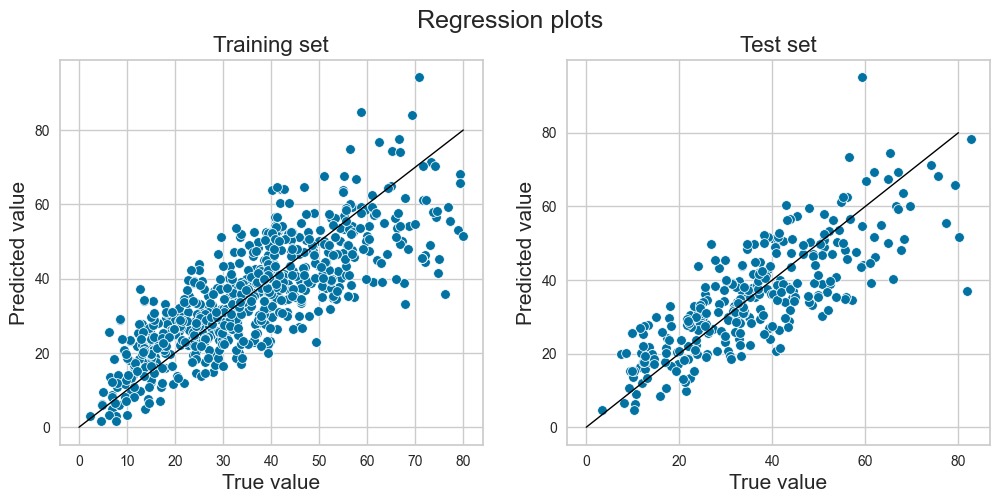
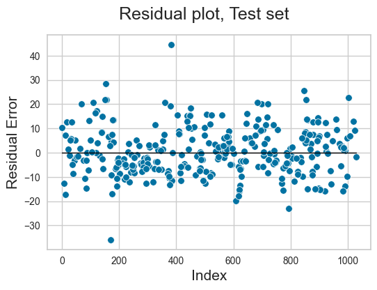

Project information
- Category: Engineering
- Tags: Regression, Interpretable ML
- Link to dataset : Click here
Context
Concrete is the most widely used building material in the world. It is a mix of cement and water with gravel and sand. It can also include other materials like fly ash, blast furnace slag, and additives. Predicting its strength from these ingredients is a difficult task, as each ingredient can have an effect on the strength of the concrete.

Machine Learning can help find the optimal recipe of ingredients and predict the strength properties of the concrete. All we need is experimental data to train our machine learning model.
The compressive strength of concrete is a function of components and age. A sample of 1030 different combinations was published (Source) and is used in this project. It contains the following variables:
- "cement" - Portland cement in kg/m3
- "slag" - Blast furnace slag in kg/m3
- "fly_ash" - Fly ash in kg/m3
- "water" - Water in liters/m3
- "superplasticizer" - Superplasticizer additive in kg/m3
- "coarse_aggregate" - Coarse aggregate (gravel) in kg/m3
- "fine_aggregate" - Fine aggregate (sand) in kg/m3
- "age" - Age of the sample in days and Finally, the Strength in Megapascals.
Objective
The objective of this project is to identify key component which affect its compressive strength and develop a predictive model for future use.
The model should be interpretable, hence multivariate linear regression is chosen as the ML algorithm.
Data Exploration and Visualization
I created a correlation plot superimposed by a heatmap to visualize the linear relationships among the input variables.
Following observations are made from this analysis:
- 'Cement' is the best predictor for concrete strength.
- 'Superplasticizer' shows medium correlation with compressive strength.
- 'Slag', 'fly_ash' are very weak predictors so can be omitted.
- 'Water' shows a weak negative correlation with strength.
Multicollinearity:
- 'Superplasticizer' and 'fly_ash' shows some medium correlation (r=.38) between them.
- 'Water' and 'superplasticizer' shows strong negative correlation between them (r=-.66).
I dropped ‘fly_ash’ as it was weakly correlated to target variable (strength). Of 'Water' and 'Superplasticizer', I dropped Water which has weaker correlation with ‘Strength’.
The final model contained 5 features including: Cement, Superplasticizer, Coarse Aggregate, Fine Aggregate, and Age.
Prior Knowledge
A review of existing literature on the subject indicated that ageing has little effect on concrete strength after 90 days (Source). Moreover, typical ageing days for concrete are 1, 7, 28 and 90 days as shown in the following figure. Hence, I decided to bucket the 'Age' column into the above 4 categories. This choice will help the learning algorithm.
DF['Age'].head()
# Convert Age into set 4 categories
# From 0 to 7 days is Cat. 1
# From 8 to 28 days is Cat. 2
# From 29 to 90 days is Cat. 3
# Anything over 90 days is Cat. 4
# Define the bins and the labels for each bin
bins = [0, 8, 29, 91, 400]
labels = [1, 2, 3, 4]
DF['Age_bins'] = pd.cut(DF['Age'], bins=bins, labels=labels, right=False)
-->
I then split the data into training and testing sets to evaluate model's predictive capacity. An OLS linear regression model was created using 'statsmodels' library.
Model Results and Interpretation
The effect of 'Coarse Agg' is minimal and not statistically significant (p=.862) so can be neglected. The coefficients for other four components are significant we can form an empirical equation using them as:

The skew of the resulting residuals is small (0.442). The Kurtosis value is also closer to the target value (3.47).
Model Evaluation
The R2 scores for the model are 65% and 67% for training and test set respectively. The model has a typical error (RMSE) of 9.5 MPa.

The residual plot shows a random scatter of points forming an approximately constant width band around the identity line. This means that both the assumption of linearity and homoscedasticity are met.
